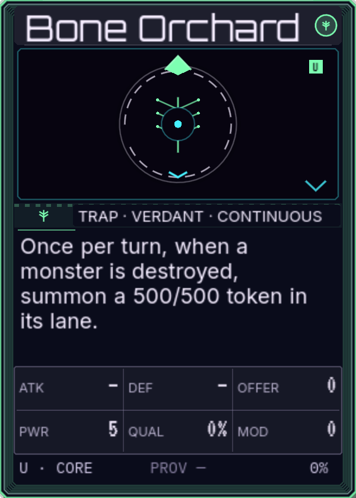
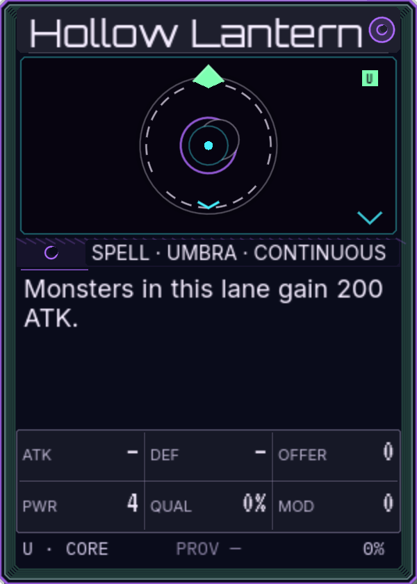
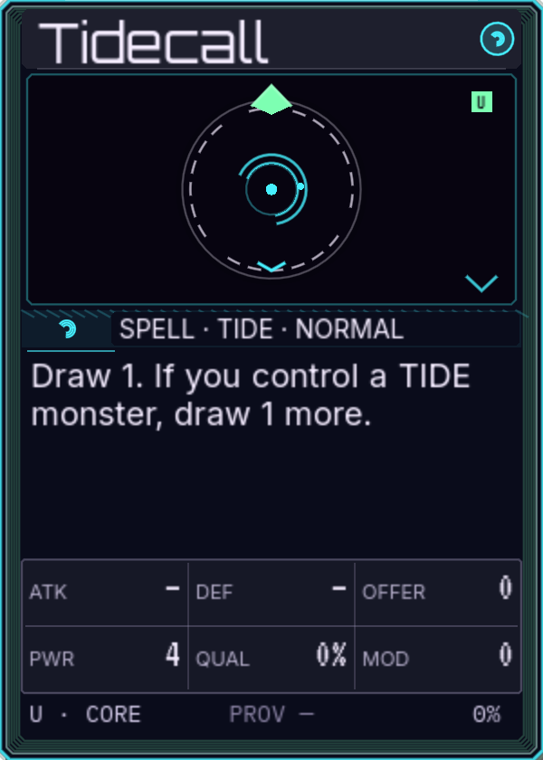
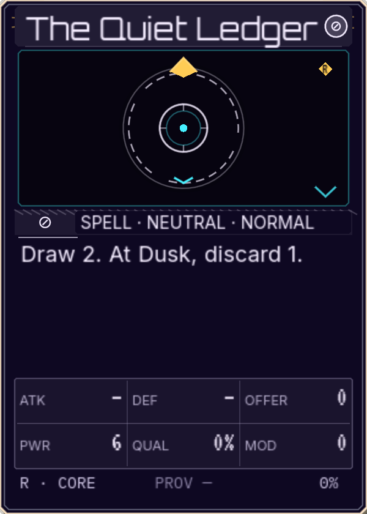

MV
Tabletop UX · card ergonomicsMara Voss
“A set card is a promise; a face-up card is a rule.” Treat the two states as different objects, not the same tab.
X2 backrow·the team, second pass
You are right about the current X2 backrow: a face-up spell or trap sits behind the monster with only a 52px tab, so its effect is hidden. The team's rule is simple — a face-down set card keeps its secret, but a face-up card is a rule in play and should be visible without a hover or a click.
Actual-size 1920×1080 frames; Fit frames shows the whole table. The X2 hand shelf is kept in every option. The team's new render set includes Bone Orchard, Hollow Lantern, Tidecall, Quiet Ledger, and Ninefold Seal.

face-up = public set cards stay tuckedA set card is hidden information until it flips; hiding it is correct. A face-up continuous spell or trap is a rule the table is already living with. Hiding its effect behind the monster makes the player hunt for the state of the game. The team keeps X2's hand shelf and card budget, and gives the face-up backrow a public surface.
The six personas return. This time the question is not how big the board is; it is what the board is allowed to hide.
“A set card is a promise; a face-up card is a rule.” Treat the two states as different objects, not the same tab.
“No hover-only for an active effect.” The face-up effect needs a persistent surface; focus, click, and touch must agree.
“Give the face-up spell/trap a front-row seat.” The card is already public; let it stand next to its monster.
“Put the effect in the tab or ribbon.” A 140px effect tab can carry the rule; the full face is optional.
“The lane can be two cards wide.” At 1920 the board has the width for a full face-up backrow; the hand shelf already exists.
“You should never hunt for a continuous effect.” If it changes every decision, it belongs in the resting view.
B0 is the current X2 backrow. B1 gives a face-up card the full seat next to its monster; B2 writes the effect on the tab; B3 writes it in a ribbon; B4 puts the face-up cards in a side gallery. Every option keeps the X2 hand shelf.
A face-up Bone Orchard behind Cinder Hound; only the 52px tab is visible. The effect is in play but not in the resting view. This is the complaint.






 34
34

X2's board and hand shelf, unchanged. Set cards stay secret; face-up cards are hidden too.
The effect is behind the card. You must hover or click to know what is already changing the table.
A face-up spell/trap moves out from behind the monster and stands beside it, full size. A face-down set card keeps the 52px tab. The X2 hand shelf and board height stay.
TEAM PICK · 1920+ · NO HOVER FOR FACE-UP
34Five face-up spells/traps are full cards next to their monsters. The effect text is readable at rest; no hover. Set cards keep the tab and stay secret.
The lane is two cards wide: the board is 1746 at 1920 (42px spare at 1440, 174px at 1920). At 1000 the card falls to 158; B3 is the square answer.
The face-up card stays behind its monster, but its tab grows to 50% of a card and carries the name plus the effect sentence. The full face is one click away.
ROOK · NARROW-BOARD OPTION
34The effect is visible at rest in a compact 1325px board. No face-up hover; the full card is only for art and full rules.
The tab text is 9–10px; at 1440 it falls to 112px and the effect gets tight. At 1000 the tab falls to 104px. The full face still needs a click.
The backrow keeps the 52px tab, but a persistent ribbon above the board lists every face-up effect as text. The board card drops only 13px; the hand shelf stays.
IVO + ROOK · SQUARE-SAFE
34Every face-up effect is always visible as text; no hover, no click, no tab hunting. The board card is 270, only 13px below X2; the hand shelf is untouched.
The ribbon is a summary, not the full face. The cards stay behind their monsters; the full face is one click. At 1000 it is 244 and still the best square answer.
The board keeps X2's 283px card; a full-card rail on the right shows the face-up spells/traps. Two are visible at once; the third scrolls. The set cards stay in their tabs.
MARA + NADIA · 1440 COMPACT
34The X2 board card stays 283; the face-up cards are full in a side rail; two are visible at once, the rest scroll. No hover for the effect.
The rail is a second surface; at 1000 the board plus rail no longer fits, so B3 takes over. The third face is a scroll, not a glance.
The card width stays close to X2 because these layouts only change the backrow, not the hand. B1 wins the card and the full face at 1280+; B3 owns the square; B4 is the compact 1440 gallery; B2 is the narrow-board index.
| Window | B0 hidden | B1 front row | B2 tabs | B3 ribbon | B4 rail | Best |
|---|---|---|---|---|---|---|
| 1280×720 | 167 | 167 | 167 | 154 | 167 | B1 · 167 |
| 1440×900 | 225 | 225 | 225 | 212 | 225 | B1 · 225 |
| 1920×1080 | 283 | 283 | 283 | 270 | 283 | B1 · 283 |
| 2560×1440 | 399 | 399 | 399 | 386 | 399 | B1 · 399 |
| 3440×1440 | 399 | 399 | 399 | 386 | 399 | B1 · 399 |
| 1000×1000 | 256 | 158 | 208 | 244 | 196 | B3 · 244 |
| 960×960 | 242 | 152 | 200 | 231 | 186 | B3 · 231 |
B0 and B1 share the X2 card: the difference is that B1 gives the face-up card the full seat and B0 leaves it behind the monster. B1 is 1746 wide at 1920 (48px spare) and 1398 at 1440 (42px spare). B3 is the only option that keeps a text effect at 1000/960 without a rail. Set cards remain tabs in every option.
The answer is not to show every set card; it is to stop hiding the face-up ones. The team ships a shape-dependent backrow:
TEAM PICK
B1 is the clean answer: a face-up spell/trap stands next to its monster at full 283px, with the effect readable. Set cards keep the 52px tab. At 1440 B1 still fits with 42px to spare; B4 is the calmer gallery. At 1000/960 the two-card lane shrinks the board, so the 40px B3 ribbon carries the effect text instead.
Face-down set: tab only. Face-up spell/trap: public card, tab, ribbon, or rail. Same card token.
At 1920+, widen the lane to monster + face-up card. At 1440, use the rail. At square, use the ribbon.
The X2 hand shelf, card size, and lane order survive. The backrow changes; the table does not.
This is a review page. The live table is still the fixed 190 / 1000 focus. The new spell/trap renders are the shipping `CardComposer` faces. The next port would make the backrow state — set vs face-up — drive the layout, not a hover.